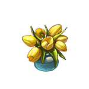

Получено: файл; исходный URL. Изображение подписано на странице-источнике; файл получен с зеркала. Совпадение с оригиналом не проверено. Страница: источник.
Жёлтые тюльпаны
ВКонтакте; дата источника не указана- Тип
- Растения
- Версия и дата
- ВКонтакте; дата источника не указана
Данные по источнику · ВКонтакте · дата источника не указана
Предварительно: один источник; требует сверки. Требуется сверка.
- Цена посева
- 2500 монет
- Рост
- 24 ч
- Опыт
- 6
- Продажа
- 2650 монет


Данные по источнику · ВКонтакте, ZombieS Forever · дата редакции не установлена
Предварительно: Историческая фанатская страница; независимость от других источников не установлена. Возможны различия версий и дат.. Требуется сверка.
- Цена (как указано в таблице)
- 2500; валюта в строке явно не указана
- Рост
- 24 часа
- Опыт
- 6
- Продажа (как указано в таблице)
- 2650; валюта в строке явно не указана
Данные по источнику · браузерная версия; платформа не указана · дата редакции не установлена
Предварительно: Содержимое списка: изображения и колонки могут терять смысл при извлечении текста; отдельная страница и дата не проверены. Подписи alt иногда ошибочны.. Требуется сверка.
- Текст карточки из каталога
- Растение: Описание: Используется: Время роста: 24 часа Дают опыта: 6 Покупка: 2500 монет Продажа: 2650 монет Растут в Хрустальным или Мраморной Пещере. Сажать можно только там, покупая на рынке в подземелье. (нужно 555 штук)
Данные по источнику · ВКонтакте, исторический фанатский справочник · дата редакции не установлена
Предварительно: Историческая фанатская таблица: цены и время могут зависеть от версии. Заявления об отсутствии применения относятся только к моменту составления; независимость источников не установлена.. Требуется сверка.
- Текст записи
- Желтые Тюльпаны Цена: 2500 Растет: 24час. Опыт: 6 Продажа: 2650
Данные по источнику · браузерная игра; платформа не указана · 06.05.2012 — дата публикации; дата редакции неизвестна
Предварительно: Сведения одного исторического фанатского сайта, не текущие цены или универсальные правила. Единицы и подписи-иконки могли не попасть в текст; сопоставление имён в единственном и множественном числе предварительное. Страница связана ссылками с zombi-ferma.ru, независимость не установлена.. Требуется сверка.
- Текст и числовые данные страницы
- Желтые тюльпаны Уровень игрока: 1 Цена семян: 2500 Цена продажи: 2650 Опыт за сбор грядки: 6 Время созревания: 24 часa
Связанные сущности
нет проверенных связей — требуется сверка.